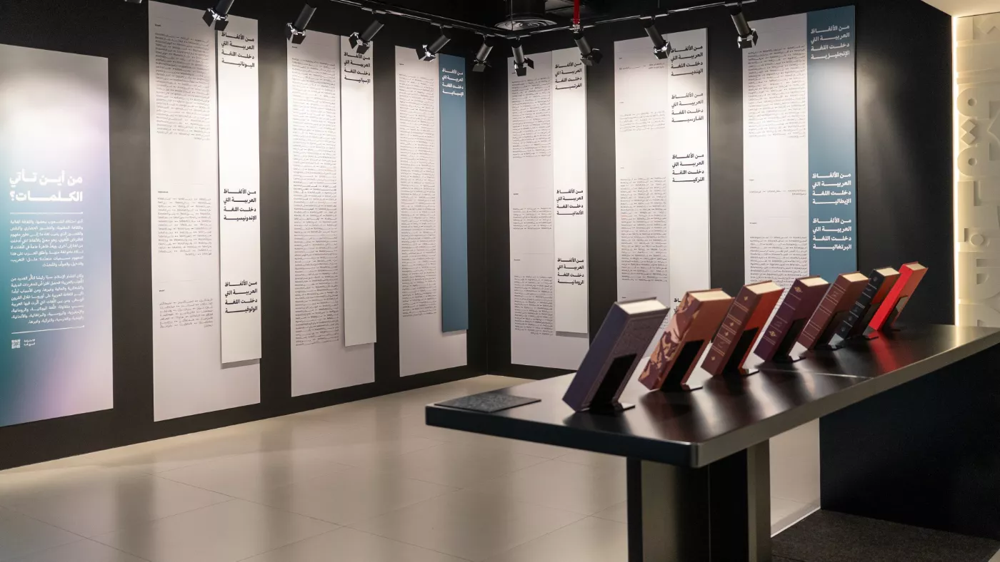
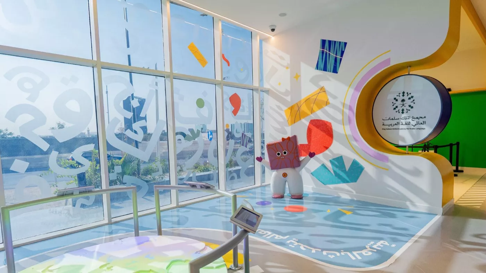
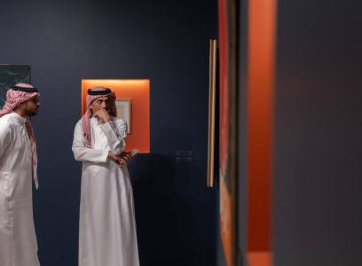

تابع ثقافة وفنون
هذه الروابط تتحدث مع كل بناء وتعرض الفعاليات القادمة والجارية لهذا السياق فقط.
ثقافة وفنون في السعودية مع وقت الفعالية ومكانها ومصدرها وحالة الجدول الحي.
هذه الروابط تتحدث مع كل بناء وتعرض الفعاليات القادمة والجارية لهذا السياق فقط.
From the heart of Riyadh, we were greeted by the light of a unique, inspiring exhibition exploring the depths of the Arabic language, showcasing its deep roots, mature stages of growth, and vast reach, as well as the pride its people hold in it.The Arabic L... المصدر الرسمي: Visit Saudi.

From the heart of Riyadh, we were greeted by the light of a unique, inspiring exhibition exploring the depths of the Arabic language, showcasing its deep roots, mature stages of growth, and vast reach, as well as the pride its people hold in it.The Arabic L... المصدر الرسمي: Visit Saudi.
تفاصيل الحضور
This exhibition is one of its kind in the Arab world to be developed by a language institution, focuses on developing children's linguistic awareness of the Arabic language. المصدر الرسمي: Visit Saudi.
تفاصيل الحضور
Misk Art Institute presents the third edition of the Solo Series, spotlighting established Saudi artists Fouad Mougharbel and Saad Almasari, whose work has contributed significantly to the Kingdom’s evolving visual culture. Through two individual exhibitions—“Taibah: Remnants and Solace” by Dr. Fouad Mougharbel and “Geometry as Thought” by Saad Almasari—the series offers insight into their artistic journeys and practices, reflecting their sustained engagement with the local art scene. Together, the exhibitions highlight diverse perspectives and approaches that contribute to shaping Saudi Arabia’s contemporary artistic identity. Alongside the exhibitions, a curated public program provides opportunities for deeper engagement: Exhibition Program: May 6: Artist Signing with Dr. Fouad Mougharbel & Saad Almasari | 7 PM May 7: Curator-Led Tour | 6 – 7 PM Artist Talk with Dr. Fouad Mougharbel | 8 – 8:45 PM Artist Talk with Saad Almasari | 9 – 9:45 PM May 9 Workshop: Exhibition Design | 7 – 9 PM May 9 – 11 Intensive Workshop: Pattern Design (Inspired by Saad Almasari) | 7 – 9 PM. May 16: Artist in Focus: Saad Almasari | 7 – 9 PM June 3: Curator-Led Virtual Tour | 7 – 8 PM For the latest updates and announcements, follow their official X account @MiskArtInst
تفاصيل الحضور
Art Futures Summer Camp for Arabic-Speaking Teens is a three-week immersive programme hosted by Diriyah Art Futures (DAF), the MENA region’s first centre dedicated to New Media Arts. Designed for Arabic-speaking teens aged 14–18, the camp offers an in-depth introduction to digital art practices in a dynamic and supportive environment. Under the 2026 theme, “Digital Art and Portraiture,” participants explore new ways of representing identity in the digital age, questioning how individuals are portrayed when faces become data and images circulate beyond physical presence. The programme combines creative experimentation with foundational technical skills, including Fab Lab practices and digital studio portraiture. Throughout the camp, participants work closely with industry specialists and creative mentors, culminating in a collaborative exhibition produced with DAF’s curatorial and exhibition teams to showcase their work. Applications are officially open, with aspiring young creatives in Riyadh able to apply until Sunday, June 7.
تفاصيل الحضور
SAIF 2026 is a summer creative program presented by SAMoCA at JAX, offering a diverse range of workshops, film screenings, and interactive activities for children, teenagers, and young audiences. The program features hands-on experiences in ceramics, fashion and tailoring, papermaking, photography, writing, voiceover, and other creative disciplines. Developed in collaboration with cultural and educational partners, SAIF encourages artistic expression, creativity, and cultural discovery through engaging learning experiences. Hosted at SAMoCA at JAX in the JAX District, Diriyah, the program provides an inspiring environment where visitors can explore Saudi creativity, develop new skills, and participate in a vibrant community of art and culture.
تفاصيل الحضور